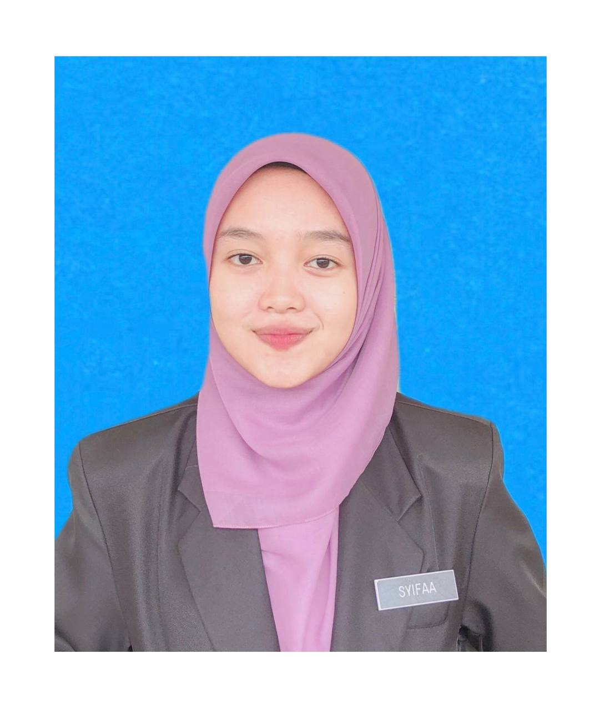
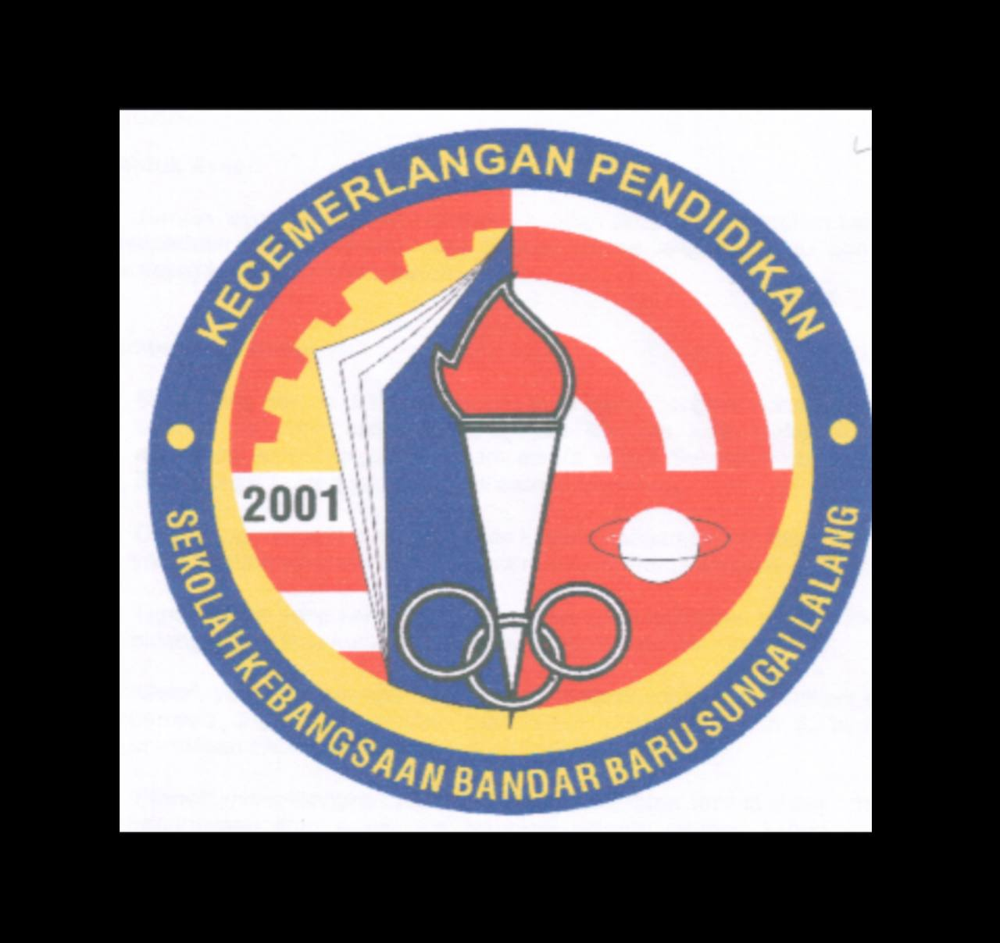
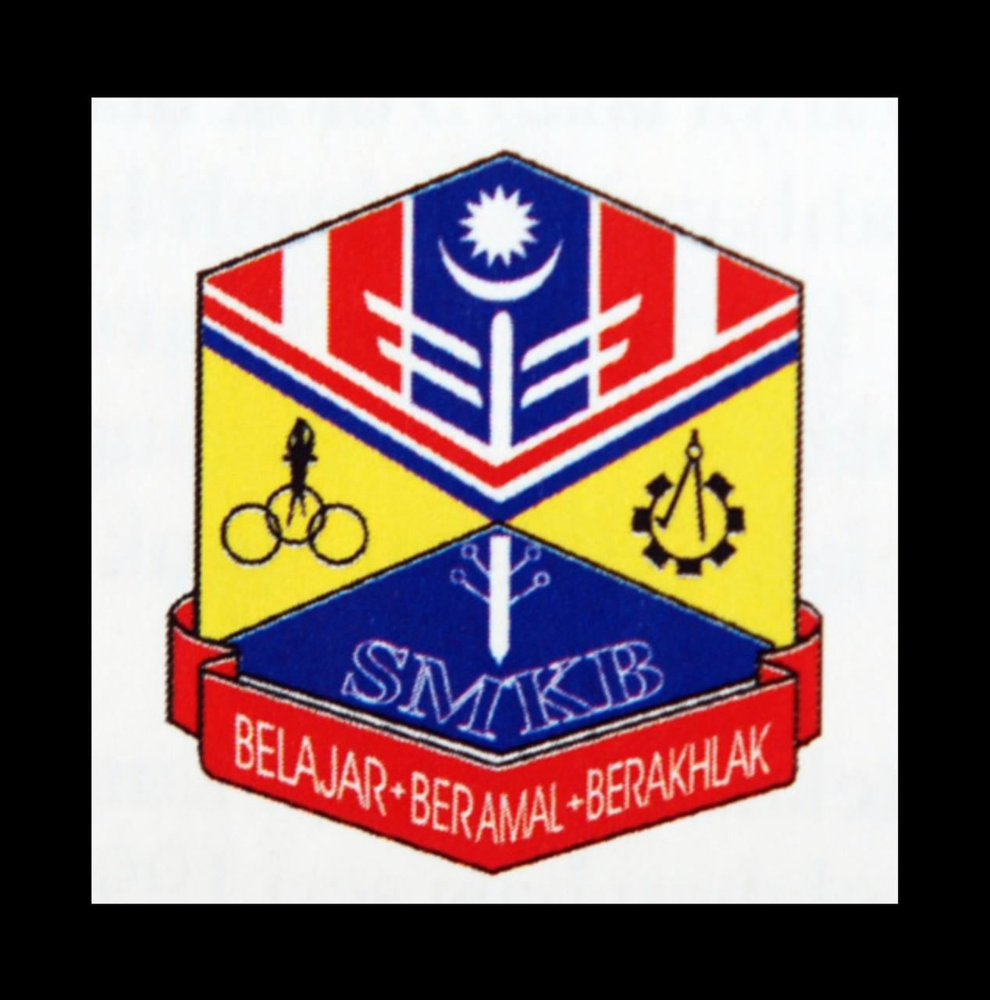

Home
Myself
Travel
Friends
Interest
Education
Home
Myself
Travel
Friends
Interest
Education
EDUCATION PROFILE

SYIFAA IZZATI BT ZUBIR

SK BANDAR BARU SUNGAI LALANG , KEDAH
Sungai Lalang's SK Bandar Baru is proof of the transforming potential of education. With a long history and a dedication to supporting both academic achievement and individual development, this elementary school has grown to be an important part of the neighborhood.The committed and motivating teachers of SK Bandar Baru Sungai Lalang is the reason for the school's success. The instructors are enthusiastic learners who are dedicated to their students' academic and personal development. They work tirelessly to establish a supportive and engaging learning atmosphere where each kid is able to succeed.While welcoming innovation, SK Bandar Baru Sungai Lalang is dedicated to upholding its legacy of excellence. The school wants to improve its extracurricular programs, incorporate new technologies, and improve its curriculum even further. By remaining adaptable to the changing needs of both society and students, SK Bandar Baru Sungai Lalang guarantees that its graduates are prepared to handle the challenges of the contemporary world.
SMK AMANJAYA SUNGAI LALANG, KEDAH
SMK Amanjaya is a shining example of creativity, community spirit, and education. SMK Amanjaya is a top-tier institution specializing in secondary vocational education. It is dedicated to fostering students' abilities and skills and preparing them for the difficulties of the contemporary world.SMK Amanjaya has developed into a reputable organization with a strong school culture and strict academic standards.The curriculum at SMK Amanjaya is created to give pupils both theoretical knowledge and real-world skills. Numerous vocational programs are available at the school, such as those in computer technology, engineering, business studies, culinary arts, and other fields. Every program is painstakingly designed to satisfy industry requirements, guaranteeing that graduates are prepared for the workforce.SMK Amanjaya is dedicated to innovation and ongoing development. The school wants to improve its industry relationships, broaden its program offerings, and integrate cutting-edge technologies into the curriculum. SMK Amanjaya makes sure that its graduates are equipped for the difficulties of the modern workforce by staying ahead of educational trends and making adjustments as needed.

SMK BEDONG ,KEDAH
SMK Bedong is a representation of innovation and quality in education. As a premier secondary school institution, SMK Bedong has made a name for itself by fostering young minds and preparing students for the future.SMK Bedong has committed itself to offering an excellent education with a focus on both personal growth and academic achievement. The institution has a long history of turning out well-rounded alumni who perform well in a variety of disciplines and make valuable contributions to society. Parents and kids alike favor SMK Bedong due to its reputation for academic excellence and comprehensive instruction.SMK Bedong is dedicated to innovation and ongoing development. The school wants to improve its industry relationships, broaden its program offerings, and integrate cutting-edge technologies into the curriculum. SMK Bedong makes sure that its graduates are equipped for the challenges of the future by staying ahead of educational trends and making adjustments to meet the changing needs of society.
UNIVERSITI TEKNOLOGI MARA CAWANGAN SUNGAI PETANI
Universiti Teknologi MARA (UiTM) Sungai Petani is a prominent university committed to empowering learners via innovative learning and superior instruction.UiTM Sungai Petani is dedicated to offering a varied student body a high-quality, easily accessible education. Emphasizing academic excellence, transferable skills, and holistic growth, UiTM Sungai Petani has built a solid reputation for turning forth graduates who are outstanding in their fields and make significant contributions to society.To meet the demands of the ever-changing employment economy, UiTM Sungai Petani provides a broad choice of academic programs. Undergraduate and graduate degrees in business, engineering, information technology, and the arts are offered by the university. Every program is created to give students the academic understanding and real-world skills they need to be successful in the workplace.UiTM Sungai Petani is committed to innovation and ongoing development. The institution wants to improve industry relationships, increase research capacity, and broaden its academic offerings. Through adapting to the changing demands of society and the global labor market, UiTM Sungai Petani guarantees that its graduates are prepared to thrive in the workplace and contribute positively to society.